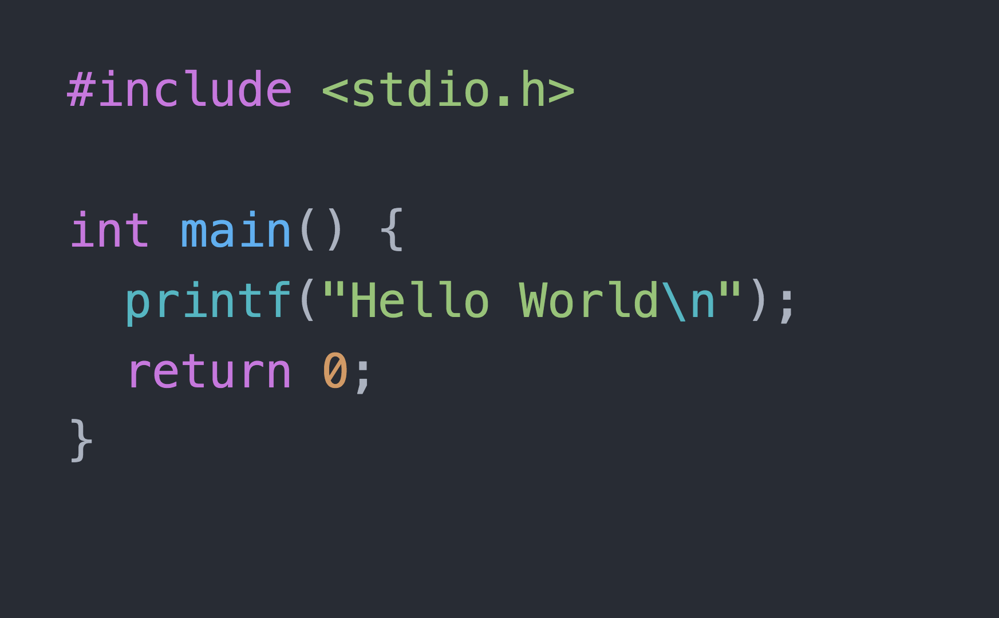

Welcome! If you landed here, I know what you're thinking: here we go, yet another software blog. And I can't help but agree with you, the Internet is plenty of blogs with similar contents, some of them being a reference for almost every software engineer on the globe like Martin Fowler's one.
Then, why another blog?
Because - even if I know I'm not bringing anything new or groundbreaking to the table - I'm still convinced there's plenty of reasons why every software engineer should have a blog. Here's a non exhaustive list of what in my opinion are the main benefits:
- it's a great excuse to keep learning new stuff
- it will help improve communication and technical writing skills
- it's the best way to make sure I really understood a topic, and that I'm able to clearly explain it
- hopefully, I'll end up writing something interesting for the community, and that could help someone else
I'll try to collect here either personal working experiences I found interesting and worth - at least in my opinion - to be shared, or posts about arguments I would like to learn about, hoping that whoever will stumble across these contents will find them interesting as well or, even better, useful.
Ciao! 👋🏼
Luca